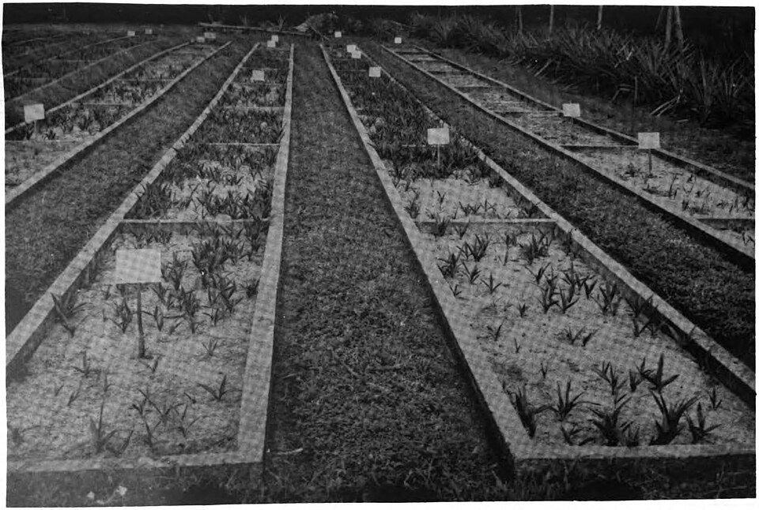
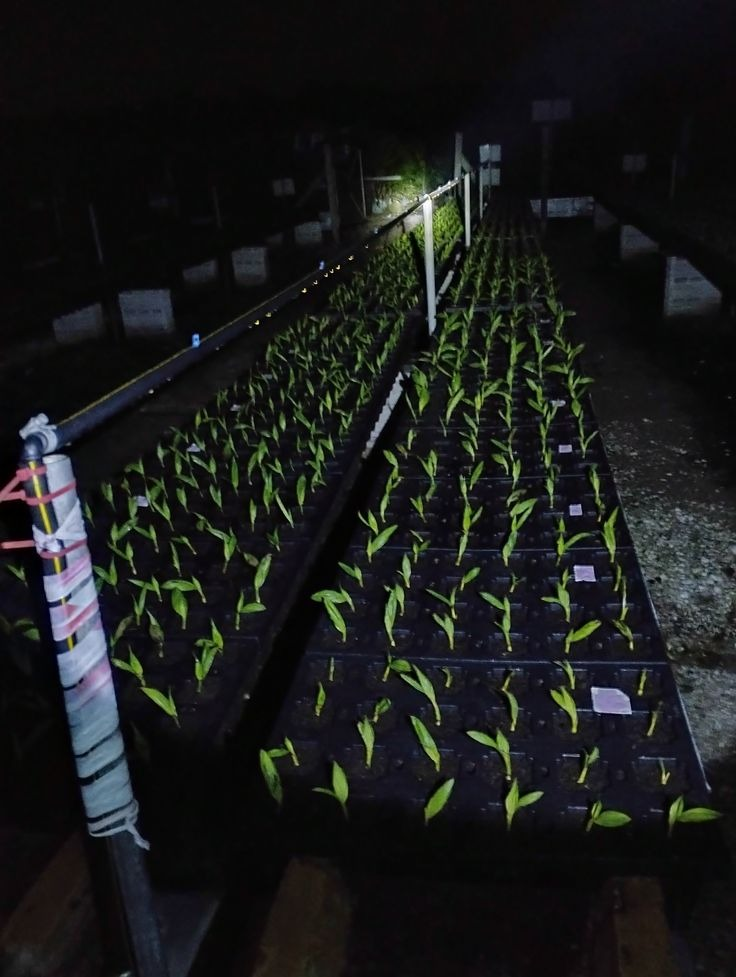
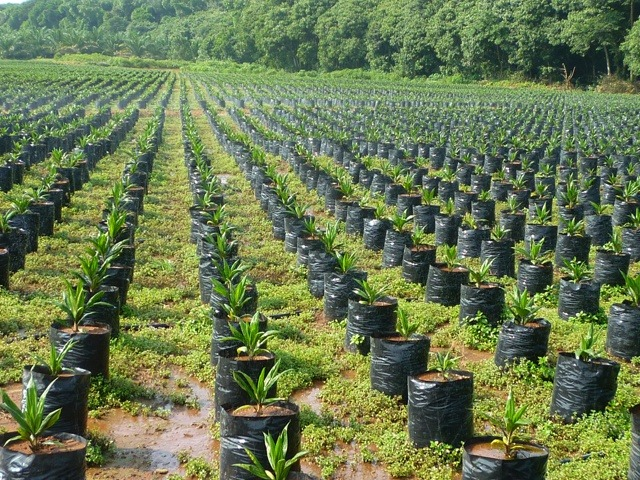
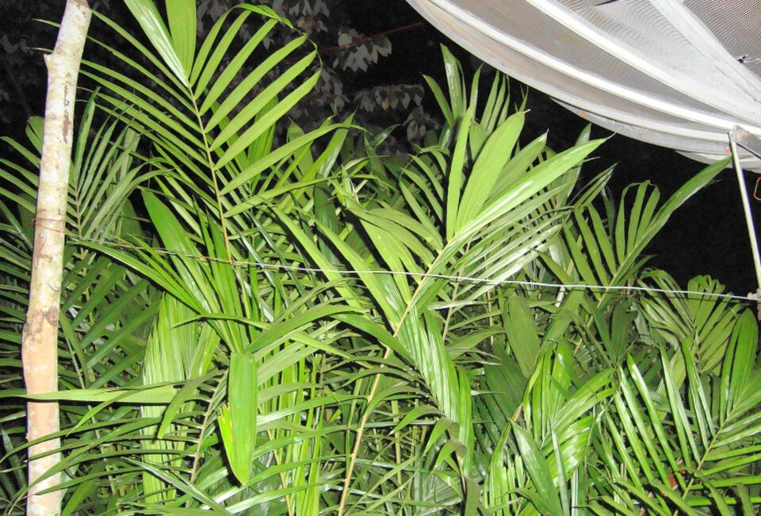

Blok Sentral, Timur, dan Cadangan
PN: 48.500 | MN: 80.000 pokok
12 Berjalan, 6 Persiapan
Keberhasilan tumbuh sangat tinggi
Optimalisasi Pertumbuhan Bibit Sawit untuk Produktivitas Maksimal
Monitoring terstruktur mulai dari fase kecambah, seleksi ketat di Pre-Nursery, hingga Main Nursery siap salur.
Aktivitas Lapangan Terbaru
Modul Utama Pembibitan Sawit
Pintasan ke tahapan pembibitan dan standar operasional lapangan

Sertifikasi benih resmi & syarat topografi lahan

Manajemen kecambah & polybag kecil

Pembesaran bibit sawit polybag besar

Pengelolaan bibit bongsor siap salur kebun
Tim Pengembang & Peneliti Sistem
BPDPKS Research TeamPerancang sistem informasi pembibitan kelapa sawit terpadu berbasis regulasi BSIP & riset agronomi
Abel Ramadhan
24241012
Pemilihan Bibit & Penentuan Lokasi
Rohimin
24242032
Pre Nursery (PN) 0-3 Bulan
Afiq Zuhairi
24241005
Main Nursery 3-12 Bulan
Mhd. Setyo Abdillah
24242025
APM (Bibit Lanjut 12-18 Bulan)
🔗 Pustaka SOP & Referensi Ilmiah Pembibitan Kelapa Sawit
Tautan langsung ke dokumen Standar Operasional Prosedur kementerian dan jurnal riset terakreditasi
SOP Resmi BSIP Sumbar (Kementan)
Standar Operasional Prosedur Pembibitan Sawit (seleksi benih, media, naungan, dan culling afkir).
Jurnal Agriprima (Polije 2022)
Kajian Teknis Pertumbuhan Bibit: Level penyiraman kapasitas lapang 100% dan dosis pupuk KCl 0.4-0.6g.
Jurnal Agritrop (Unmuh Jember 2022)
Manajemen Pembibitan Kelapa Sawit: Formulasi media tanam topsoil, kompos, dan arang sekam 2:1:1.
Jurnal JIPK (Unmura 2022)
Penelitian Ilmu Pertanian: Volume Large Bag 10 kg polybag dan aplikasi dosis pupuk NPK 4-15 gram.